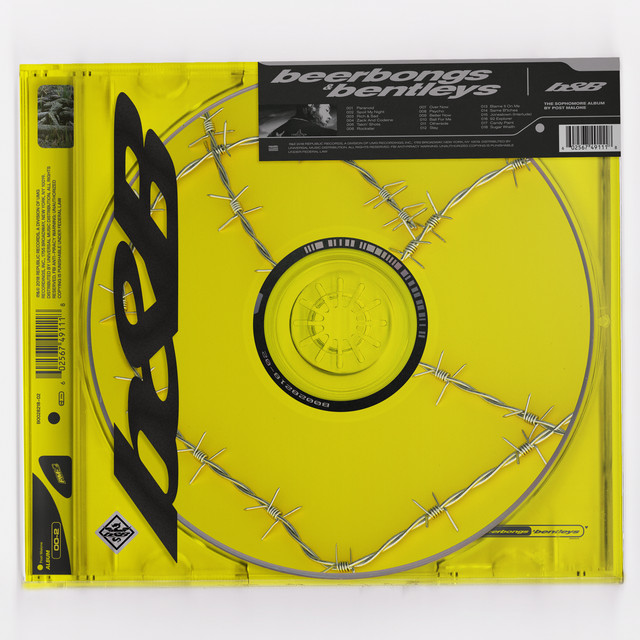

Músicas incríveis para programar!
Post Malone - Circles

We couldn’t turn around
Til we were upside down
I’ll be the bad guy now
But know I ain’t too proud
I couldn’t be there
Even when I tried
You don’t believe it
We do this every time
Seasons change and our love went cold
Feed the flame because we can’t let go
Runaway but we’re running in circles
Runaway, runaway
I dare you to do something
I’m waiting on you again
So I don’t take the blame
Runaway but we’re running in circles
Runaway, runaway, runaway
Let go
I got a feeling that it’s time to let go
I said so
I knew that this was doomed from the get go
You thought that it was special, special
But it was just the sex though, the sex though
And I still hear the echoes, the echoes
I got a feeling that it’s time to let it go
Let it go
Seasons change and our love went cold
Feed the flame because we can’t let go
Runaway but we’re running in circles
Runaway, runaway
I dare you to do something
I’m waiting on you again
So I don’t take the blame
Runaway but we’re running in circles
Runaway, runaway, runaway
Maybe you don’t understand what I’m going thru
It’s only me, what you got to lose
Make up your mind, tell me what are you gonna do
It’s only me, let it go
Seasons change and our love went cold
Feed the flame because we can’t let go
Runaway but we’re running in circles
Runaway, runaway
I dare you to do something
I’m waiting on you again
So I don’t take the blame
Runaway but we’re running in circles
Runaway, runaway, runaway
Post Malone - I Fall Apart

Oooh, I fall apart
Oooh, yeah, mmhmm
She told me that I'm not enough (yeah)
And she left me with a broken heart (yeah)
She fooled me twice and it's all my fault (yeah)
She cut too deep, now she left me scarred (yeah)
Now there's too many thoughts goin' through my brain (yeah)
And now I'm takin' these shots like it's Novocaine, yeah
Oooh, I fall apart
Down to my core
Oooh, I fall apart
Down to my core
Oooh, didn't know it before
Surprised when you caught me off guard
All this damn jewelry I bought
You was my shorty, I thought
Never caught a feelin' this hard
Harder than the liquor I pour
Tell me you don't want me no more
But I can't let go
Everybody told me so
Feelin' like I sold my soul
Devil in the form of a whore
Devil in the form of a whore
You said it
No, you said it
No, you said it
We'd be together
Oooh, I fall apart
Down to my core
Oooh, I fall apart
Down to my core
Oooh, didn't know it before
Surprised when you caught me off guard
All this damn jewelry I bought
You was my shorty, I thought
Ice keep pourin' and the drink keep flowin'
Try to brush it off but it keep on goin'
Covered in scars and I can't help showin'
Whippin' in the foreign and the tears keep blowin'
Ice keep droppin' and the drink keep flowin'
Try to brush it off but it keep on goin'
All these scars, can't help from showin'
Whippin' in the foreign and the tears keep blowin', yeah
Oooh, I fall apart
Down to my core
Oooh, I fall apart
Down to my core
Oooh, didn't know it before
Surprised when you caught me off guard
All this damn jewelry I bought
You was my shorty, I thought
Post Malone - Psycho (feat. Ty Dolla $ign)

[Post Malone]
Damn, my AP goin' psycho, lil' mama bad like Michael
Can't really trust nobody with all this jewelry on you
My roof look like a no-show, got diamonds by the boatload
Come with the Tony Romo for clowns and all the bozos
My AP goin' psycho, lil' mama bad like Michael
Can't really trust nobody with all this jewelry on you
My roof look like a no-show, got diamonds by the boatload
Don't act like you my friend when I'm rollin' through my ends, though
You stuck in the friend zone, I tell that four-five the fifth
Hunnid bands inside my shorts, DeChino the shit
Try to stuff it all in, but it don't even fit
Know that I been with the shits ever since a jit
I made my first million, I'm like: Shit, this is it
30 for a walkthrough, man, we had that bitch lit
Had so many bottles, gave ugly girl a sip
Out the window of the Benzo, we get seen in the rent'
And I'm like: Whoa, man, my neck so goddamn cold
Diamonds wet, my t-shirt soaked
I got homies, let it go, oh
My money thick, won't ever fold
She said: Can I have some to hold?
And I can't ever tell you no
Damn, my AP goin' psycho, lil' mama bad like Michael
Can't really trust nobody with all this jewelry on you
My roof look like a no-show, got diamonds by the boatload
Come with the Tony Romo for clowns and all the bozos
My AP goin' psycho, lil' mama bad like Michael
Can't really trust nobody with all this jewelry on you
My roof look like a no-show, got diamonds by the boatload
Don't act like you my friend when I'm rollin' through my ends, though
[Ty Dolla $ign]
The AP goin' psycho, my Rollie goin' brazy
I'm hittin' lil' mama, she wanna have my babies
It's fifty on the pinky, chain so stanky
You should see the whip, promise I can take yo' bitch
Dolla ridin' in an old school Chevy, it's a drop top
Boolin' with a thot-thot, she gon' give me top-top
Just one switch, I can make the ass drop
Ayy, take you to the smoke shop
We gon' get high, ayy, we gon' hit Rodeo
Dial up Valentino, we gon' hit Pico
Take you where I'm from, take you to the slums
This ain't happen overnight, no, these diamonds real bright
Saint Laurent jeans, still in my Vans though
All VVS', put you in a necklace
Girl, you look beautiful tonight
Stars on the roof, they matching with the jewelry
[Post Malone]
Damn, my AP goin' psycho, lil' mama bad like Michael
Can't really trust nobody with all this jewelry on you
My roof look like a no-show, got diamonds by the boatload
Come with the Tony Romo for clowns and all the bozos
My AP goin' psycho, lil' mama bad like Michael
Can't really trust nobody with all this jewelry on you
My roof look like a no-show, got diamonds by the boatload
Don't act like you my friend when I'm rollin' through my ends, though